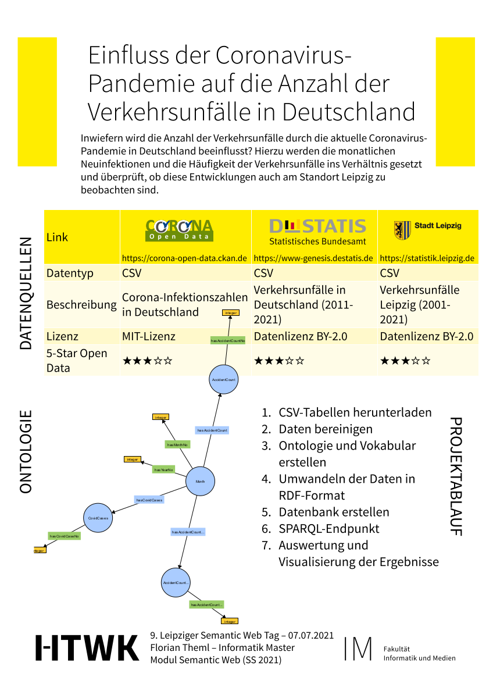

Florian Theml
To what extent is the number of traffic accidents influenced by the current coronavirus pandemic in Germany? For this purpose, the monthly new infections and the frequency of traffic accidents are compared and it is examined whether these developments can also be observed in Leipzig.
